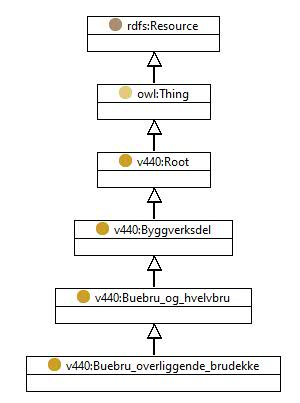

https://ontologi.atlas.vegvesen.no/v440/core/v440-owl#Buebru_overliggende_brudekke
Class v440:Buebru_overliggende_brudekke

rdf:type
owl:Class
rdfs:label
Buebru, overliggende brudekke
Arch bridge, overhead bridge deck
rdfs:subClassOf
v440:Buebru_og_hvelvbru
owl:disjointUnionOf
[
v440:Buebru_overliggende_brudekke_dobbeltbuer_hultverrsnitt
,
v440:Buebru_overliggende_brudekke_enkeltbue_massivt_tverrsnitt
,
v440:Buebru_overliggende_brudekke_andre
,
v440:Buebru_overliggende_brudekke_fagverksbue
,
v440:Buebru_overliggende_brudekke_dobbeltbuer_massivt_tverrsnitt
,
v440:Buebru_overliggende_brudekke_enkeltbue_hultverrsnitt
,
v440:Buebru_overliggende_brudekke_dobbeltbuer_profilert_tverrsnitt
]
v440:avsnitt
V-6.1
v440:kapittel
V-6
v440:kode
51
References
as owl:disjointUnionOf (
v440:Buebru_og_hvelvbru
)
as rdfs:subClassOf (
v440:Buebru_overliggende_brudekke_fagverksbue
,
v440:Buebru_overliggende_brudekke_enkeltbue_massivt_tverrsnitt
,
v440:Buebru_overliggende_brudekke_enkeltbue_hultverrsnitt
,
v440:Buebru_overliggende_brudekke_dobbeltbuer_profilert_tverrsnitt
,
v440:Buebru_overliggende_brudekke_dobbeltbuer_massivt_tverrsnitt
,
v440:Buebru_overliggende_brudekke_dobbeltbuer_hultverrsnitt
,
v440:Buebru_overliggende_brudekke_andre
)
Generated with
TopBraid Composer
by
TopQuadrant, Inc.